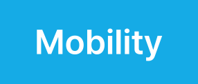

Overview
국가별 운영 방식과 규제가 다른 글로벌 모빌리티 시장에서는 일관된 시스템 운영이 관건입니다. 웅진은 SAP ERP 표준 템플릿과 클라우드 아키텍처를 적용해 본사–해외 지사를 동일 기준으로 관리하며, 글로벌 차원의 재무·물류·판매 프로세스 일관성을 보장합니다.
글로벌 기업에서 인정한 기술력과 안정성
웅진은 SAP 골드파트너사로 SAP에서 인증한 아시아 Top 5 파트너사이자 AWS Advanced 컨설팅 파트너입니다. 각 솔루션 별로 전문 인력을 보유하고 있으며, 모빌리티 솔루션 또한 세계 최고 수준의 IMS, DMS 전문가로 구성되어 있어 고객의 성공적인 디지털화를 위해 IMS, DMS Best Practice와 Customizing 전략을 제공합니다. 또한, 웅진은 ISO 27001(국제표준 정보보호 인증)과 ISO 27017(클라우드 서비스 정보보호 관리체계 인증)을 획득했습니다. 웅진은 고객의 정보 자산을 효과적으로 관리할 수 있으며, 더욱 안전하게 유지하기 위한 프레임워크를 제공합니다. 웅진은 모빌리티 에코시스템을 통합하여 각 분야의 모빌리티 사업자들이 디지털 전환과 비즈니스 혁신을 성공적으로 수행할 수 있도록 지원합니다.
표준화된 프로세스로 글로벌 확장 용이
웅진은 전 세계적으로 인정받은 표준화된 프로세스를 통해 글로벌 운영을 지원합니다. 이는 각 국가와 지역의 특수한 요구사항을 반영하여, 글로벌 시장에서 일관된 서비스 품질을 보장합니다. 웅진은 컨설팅을 통해 다국적 기업과 해외로 사업을 확장하는 국내 기업들이 다양한 시장에 빠르고 효율적으로 진출할 수 있도록 돕습니다. 또한, 모빌리티 솔루션 시장에서 지속적인 기술 혁신을 통해 글로벌 경쟁력을 유지하고 있습니다.


Features
프로세스를 최적화
기업의 성장에 따라 업무는 다양해지고 복잡해지므로, IT 시스템은 더 빠르게 구현되고 유연하게 선택할 수 있어야 합니다. 비즈니스 프로세스를 최적화하고 표준화하여 업무 효율성을 높입니다. 프로세스 표준화를 통해 일관된 작업 방식을 확립하고, 이를 통합하여 모든 직원이 동일한 절차에 따라 업무를 수행합니다. 정보의 오류와 중복을 줄이고, 의사결정 과정에서의 투명성을 높일 수 있습니다. 업무 효율을 높여 더 중요한 전략적 업무에 집중할 수 있습니다. 데이터 관리 및 분석 기능을 강화하여 품질과 생산성을 향상시키고, 조직 전체의 성과를 개선합니다. 이를 통해 비즈니스의 지속 가능한 성장 기반을 마련합니다.
국내 롤아웃 및 해외법인 구축
고객 전략 맞춤형 롤아웃을 추진합니다. 해외 시장 진출을 계획하는 기업뿐만 아니라 국내에 진입한 글로벌 회사를 위한 글로벌 표준 IT 시스템을 구축할 수 있습니다. 프로세스 통합, 글로벌 데이터 관리, 현지 규제 및 법률 대응이 가능합니다. 기업고객에 맞게 '웅진 Add-On'으로 커스터마이징을 도와드립니다. 국내 최다 수준인 450여개의 커스터마이징 모듈은 표준화된 프로세스를 더욱 손쉽고 강력하게 지원합니다. 웅진은 고객사 상황과 디지털 전략에 적합한 롤아웃 수행 방안을 보유하고 있습니다. 고객사 맞춤형 솔루션을 만나보세요.
운영 효율성을 극대화하는 솔루션
운영 효율성을 극대화하기 위해 웅진은 컨설팅을 통해 적절한 솔루션을 제공합니다. 웅진의 솔루션은 기업의 운영 프로세스를 전반적으로 분석하여 개선 방안을 제시하며, 자동화 기술을 도입해 반복적인 업무를 최소화합니다. 이를 통해 인력의 효율적인 배분이 가능해지며, 전체 운영 비용을 절감할 수 있습니다. 실시간 데이터 모니터링과 분석을 통해 경영진이 신속하고 정확한 의사결정을 내릴 수 있도록 지원합니다. 또한, 클라우드 기반의 통합 관리 시스템을 통해 자원 관리, 생산성 향상, 비용 절감을 동시에 달성할 수 있습니다. 웅진은 기업의 운영 환경에 맞춘 맞춤형 솔루션을 제공하여, 비즈니스의 경쟁력을 한층 강화합니다.